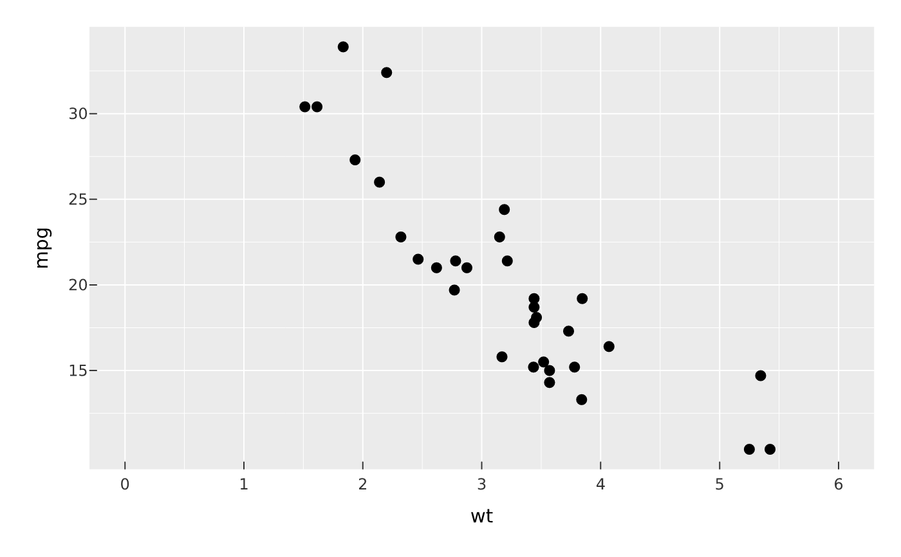
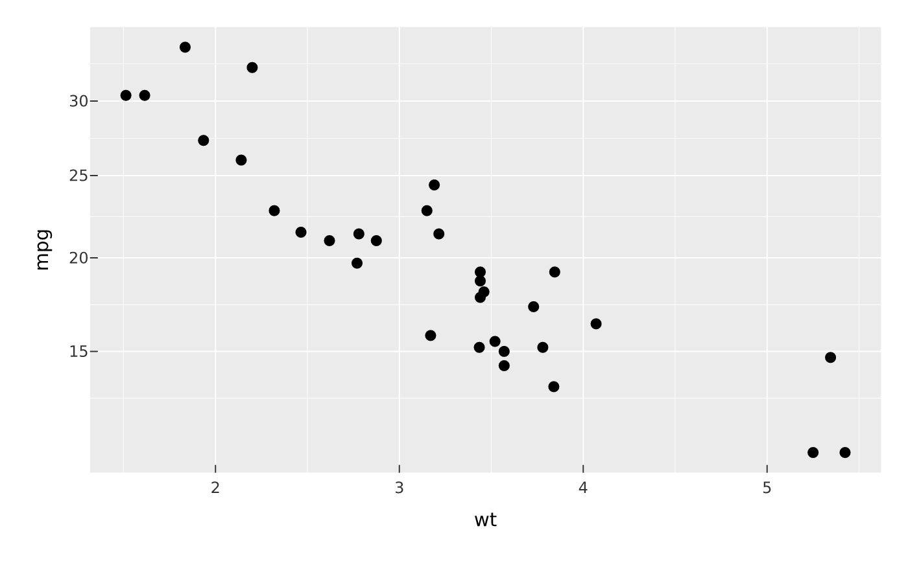

Declare a position scale to override the trained default. scale_x_continuous()
/ scale_y_continuous() handle numeric (and date/time) axes;
scale_x_discrete() / scale_y_discrete() handle categorical (band) axes and
let you set the level order via limits.
scale_x_log10(), scale_x_sqrt() and scale_x_reverse() (and their y
forms) are shortcuts for scale_x_continuous(trans = "log10") and so on,
as in ggplot2; ... takes the other arguments of scale_x_continuous().
Usage
scale_x_continuous(
plot,
limits = NULL,
trans = "identity",
breaks = NULL,
labels = NULL,
name = NULL,
expand = NULL,
sec.axis = NULL,
oob = NULL,
guide = NULL
)
scale_y_continuous(
plot,
limits = NULL,
trans = "identity",
breaks = NULL,
labels = NULL,
name = NULL,
expand = NULL,
sec.axis = NULL,
oob = NULL,
guide = NULL
)
scale_x_log10(plot, ...)
scale_x_sqrt(plot, ...)
scale_x_reverse(plot, ...)
scale_y_log10(plot, ...)
scale_y_sqrt(plot, ...)
scale_y_reverse(plot, ...)
scale_x_discrete(
plot,
limits = NULL,
name = NULL,
breaks = NULL,
labels = NULL,
drop = TRUE,
guide = NULL
)
scale_y_discrete(
plot,
limits = NULL,
name = NULL,
breaks = NULL,
labels = NULL,
drop = TRUE,
guide = NULL
)Arguments
- plot
A PlotSpec.
- limits
For continuous scales a numeric length-2 domain
c(min, max); for discrete scales a character vector of levels (sets order / subset).NULLtrains from the data.- trans
Transformation:
"identity"(default),"log10","sqrt","symlog"(symmetric log — linear through zero, logarithmic in the tails, so signed data and zero/negatives read on one axis),"reverse", or ascales::transform_log10()-style transform object.- breaks, labels
Explicit break positions (data units) and their labels, or
NULLto compute them. On a discrete scalebreaksis the levels that get a tick, andlabelsa character vector (one per break, or named by level) or a function of the levels.- name
Axis title, or
NULLto derive from the encoding.- expand
Axis padding beyond the data.
NULL(default) keeps the usual 5% breathing room; a numericc(mult, add)sets a proportion of the range plus a constant (either may be0), applied to both ends. Both act in the scale's transformed space, so on atrans = "log10"axisaddis in log units (matching how the axis is drawn). Useexpand = c(0, 0)to clamp the axis exactly to the data (e.g. a bar chart's baseline), orexpand = c(0.1, 0)for a wider margin.- sec.axis
A secondary axis from
sec_axis()/dup_axis(), drawn on the opposite edge, orNULLfor none. Continuous Cartesian plots only (seesec_axis()for the current limitations).- oob
What to do with values outside
limits, as inscales::oob_censor()and friends:"censor"drops them (they becomeNAand are not drawn),"squish"moves them onto the nearest limit,"keep"draws them where they fall, clipped by the panel. A functionfunction(x, range)such asscales::oob_squish_any()also works.NULL(default) is"keep"on a position axis. Infinite values are never out of bounds:x = Infsits on the panel edge.- guide
The axis guide:
guide_axis()to stagger, rotate or thin the labels,"none"for no labels or ticks, orNULL(default) for the plain axis. Same asguides(x = )/guides(y = ).- ...
For the transform shortcuts, further arguments to
scale_x_continuous()/scale_y_continuous()(nottrans).- drop
For discrete scales, drop factor levels that do not occur in the data (default
TRUE, as in ggplot2).limitsoverrides it.
Value
The modified PlotSpec.
Examples
vplot(mtcars) |> mark_point(x = wt, y = mpg) |> scale_x_continuous(limits = c(0, 6))

vplot(mtcars) |> mark_point(x = wt, y = mpg) |> scale_y_continuous(trans = "sqrt")
